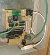

Unlike most electronic devices at TMRC, which are built on printed-circuit boards and exist in multiples (such as the block cards and the switch cards), the system IMP is unique, and for this reason it was built by hand using wire-wrap technology. The acronym stands for "Interface Message Processor", which is a nostalgic reference to a device of the same name that once interconnected computers on the ARPAnet (now the Internet). The IMP is physically located in its own cabinet under the control tower. At TMRC, the IMP performs several functions for the railroad:
The 60Hz signal is easily described: it is merely a square wave, and it is generated by division of a 9600Hz clock in the processor. It serves to initiate the pulse-width modulation cycle for each block card, so that the waveform produced by each card will match that of all the others, thus ensuring that a continuous voltage is supplied to a train as it passes from block to block.
The token is used to arbitrate the right of units on the bus to transmit data to the server. Each unit (block cards, cab interface boards, and some special-purpose interface boards for yards and local switching areas) is on a common bus carrying data to the server. It is important to ensure that only one unit transmits at a time, and the token scheme was selected by a committee of designers as the optimum method for achieving this. Successive boards on the network are wired so that each one has an "outgoing token" line which is connected to an adjacent unit's "incoming token" line. Each unit that receives the token ("received" being defined as seeing a high-to-low transition on the line) enables its driver onto the shared communication line, simultaneously setting its outgoing token line high. It then makes a transmission to the server. When that unit's transmission is complete, the driver is disabled and the outgoing token is set low, which will be seen as the "token received" signal by the next unit in line, which will repeat the process. This design requires an initial generator of the token, and the IMP fulfills this role. Generation of the token can be permitted or inhibited under orders from the server. The repetition rate of 10Hz was selected as being sufficiently fast for TMRC's purposes, while allowing time for a complete set of transmissions from every board to be made, before the IMP sends the next token. There is no check to ensure that the token has, in fact, been repeated by the last unit in sequence before the next token is produced by the IMP, but at present the time taken for all units to transmit is well below the 1/10 second limit. Because the IMP is the "first to transmit" to the server, the data cable which connects all units starts at the IMP. For reason of convenience in construction, the data translation between RS-232 (for communication with the server) and differential signal levels takes place on the IMP board also.
Just as with other units on the bus, the IMP has a board number--0x00, although the system design does not require that the lowest-numbered unit transmits first--but its transmission to the server is the first in sequence. In fact the IMP usually sends a null packet; when it has data to send, it sends data that was received over the turnout-control bus.
As is described in detail in the "Switch Card" writeup, there is a 3-line protocol for transmitting data from the IMP to the switch cards. There is also a 4th line which returns data from the switch cards to the IMP, using the same basic scheme. Data is sent and received using a variant of the SPI (Serial Peripheral Interconnnect) standard, which is basically a shift register. With every positive-going transition of a clock, a bit of data is transmitted and a bit of data is received, each on a separate line (SDO and SDI-serial data out, and serial data in). For use at TMRC, this is augmented with a "strobe" line controlled by the IMP, which triggers all the switch cards simultaneously to compare the cards' own address with the last byte of data received. Any card that makes this comparison successfully then loads the previous data bytes (in the case of standard switch cards, 2 bytes) into output registers, and also enables a driver onto a shared bus in order to send data back to the IMP. The PIC16F877A processor used by TMRC has a built-in driver/receiver for the SPI bus, so this process is economical in terms of processor time, versus a procedure of generating each bit in software. This economy is useful, because the complete set of data is repeated 80 times a second; this data rate is not needed for most purposes, but has to be used in order to produce an acceptable yellow color in bipolar (red-green) LEDs.
Associated with the IMP processor is a static random-access memory (RAM) chip with capacity 8 kilobytes. This is needed because the amount of data that the IMP sends is too large for the processor's internal RAM. This data includes the state of all turnouts and signals on the railroad, but it also includes details on how much data each switch card (or other unit on the turnout-control bus) receives and transmits, so that the IMP can drive each unit appropriately. This descriptive data in the RAM is downloaded by the server, normally when power is first turned on, but in principle at any time. The RAM is also used to store any data sent back over the turnout-control bus to the IMP.
Unfortunately the PIC processors do not have an external address bus (unlike, for example, the 8051 processor and its variants), so it was necessary to synthesize this function in order to control the RAM. This was done by dedicating one 8-bit port to a shared address and data function, and using 4 additional control bits to operate some external hardware. To read or write an address in the RAM, the processor puts the highest address byte (actually only 5 bits of this byte are needed for the RAM's 13-bit address) on the port, then toggles a strobe pin, which loads the data into a 74HC374 octal flip-flop. Then the low-order address is placed on the bus, and this is strobed into another octal flipflop. Finally, if a write operation is desired the data is placed on the port, and a bit controlling the RAM's write-enable pin is toggled. For a data read, the processor's port is set for input mode, a bit controlling the RAM's output-enable line is set low (i.e. active), the data is read from the port, the output-enable line is set inactive again, and the port is restored to an output function.
The RAM address bits described above, in addition to their normal function, each drive a light-emitting diode. During operation, any time the RAM is not in actual use the address is set so that these LEDs show a pattern of a single light travelling up and down a column. This is seen against a background of "random" operation as the RAM is accessed, and the distinctive resulting pattern is a quick indication that the IMP is functioning normally.
Each switch card sends one byte of data back to the IMP, and other units on the bus could send more than one byte, or none, if so constructed. When a data byte is received by the IMP via the turnout-control bus, it is compared with the equivalent data from the previous cycle. If the two are the same, no action needs to be taken. If there is a mismatch, the new byte replaces the old and a flag is set to indicate that this particular card has new data. When the IMP sends the next packet to the server, it reads the flags and when one is seen to be active, the processor will include a set of data identifying the relevant card, the location in its data space where the change occurred (to allow for cards which send more than one byte), and the data itself. The intention of this facility was to allow for the interfacing of small control panels and the like; however, it has been easier to construct control panels which communicate via TMRC's general-purpose data bus which links more directly with the server, so this ability may never be used. Its only present function is in interfacing emergency stop buttons ("foo buttons") around the layout.
A circuit diagram can be seen here (GIF image, approximately 80KB). Note that the system IMP was the first unit built for System 3, and some of its design assumptions were based on a need to interface with TMRC's earlier relay-based hardware, and there were different expectations regarding the hardware that would be used for user input. For this reason some unused components, not described here, exist on the IMP board. (We are politely saying that the diagram is outdated, and we aren't going to fix it.)
And a photograph of the IMP board in operation here: 
{kind=link}
{kind=link}